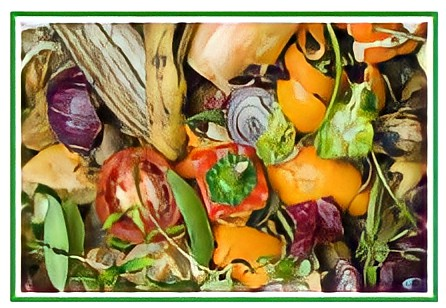
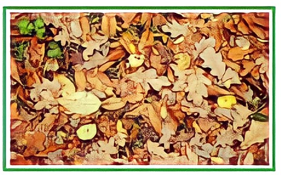

SAMPAH ORGANIK
Sampah organik adalah sampah yang berasal dari sisa mahkluk hidup yang mudah terurai secara alami tanpa proses campur tangan manusia untuk dapat terurai. |
|
|---|---|
SAMPAH ORGANIK BASAHSampah organik basah adalah sampah organik yang banyak mengadung air. Contohnya adalah sisa sayur, kulit pisang, buah yang busuk, kulit bawang dan sejenisnya. sampah organik basah dapat menimbulkan bau tidak sedap sebab kandungan air tinggi yang menyebabkan sampah jenis ini cepat membusuk.
|
 |
|  |
SAMPAH ORGANIK KERINGSampah organik kering adalah sampah organik yang sedikit mengandung air. Contohnya adalah kayu, ranting pohon, kayu dan daun – daun kering. Mayoritas sampah organik sulit diolah kembali sehingga lebih sering dibakar untuk memusnahkannya.
|
CONTOH
Sampah Organik
Sisa-sisa Makanan |
Bangkai Hewan |
Kotoran Hewan |
Dedaunan |
Limbah Pabrik Kulit |
Kayu |
Tulang Ikan |
Kotoran Manusia |
Kulit Biji Buah |